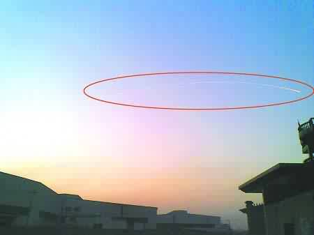
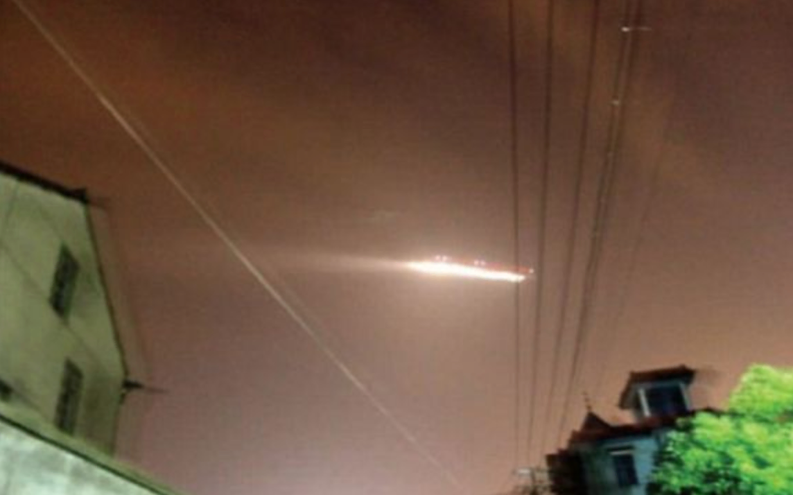

Vers À Saint Pierre d'Oléron (Bouches-du-Rhône, Provence Alpes Côte
d'azur), Jean-Louis Fesseau (ancien marin-pêcheur, 60 ans) est au volant de
sa voiture lorsqu'il voit au-dessus de l'océan une grande aile rouge et jaune très lumineuse figée dans le
ciel, à environ 600 m de la côte, et 300 m d'altitude. Je me suis aussitôt dirigé vers la plage afin
d'observer cette chose étrange, rouge et jaune. Une dizaine de secondes avant qu'elle ne disparaisse cap à
l'ouest, sans bruit, mais à une vitesse vertigineuse. (...) C'est la première fois que je voyais une
chose pareille. Et je sais aussi faire différence avec une fusée de détresse ou un hélicoptère de secours
expliquera-t-il aux gendarmes de la bourgade Gendarme qui transmettront leur PV au GEIPAN. Un couple de
restaurateurs, situés à des endroits différents (La Cotinière ?) ont fait une description similaire du phénomène
observé au-dessus de l'océan "Île
d'Oléron. Un ovni dans le ciel", La Dépêche, 2010-01-08Il s'agit en fait d'une
montgolfière en papier de 1 m de diamètre (vendues dans une jolie boutique sous les arcades à
St-Pierre d'Oléron) lancée par un Hollandais depuis Saint-Georges (Saint Pierre d'Oléron ?) pour respecter une tradition des Pays-Bas"Ile
d'Oléron (17) : l'Ovni n'était qu'une petite
montgolfière", Sud-Ouest, 14 janvier 2010.
vers À Chongqing (Chine), des gens
commençent à parler sur le BBS local de phénomènes brillants qu'ils ont vus. Ils les décrivent comme 2 à 4
phénomènes brillants se déplaçant rapidement à travers le ciel. Des astronomes locaux disent que cela a pu être
causé par une refraction de la foudre (de l'éclairage ?) "Top
10 UFO sightings", China Daily, 10 décembre 2010.
2 avions de ligne et un avion de la Marine nommé Pelican (venant de 300 miles
au nord) approchant Santiango (Chili) voit un objet croiser leur trajectoire : ROGER...
En ce moment, je ne peux plus le voir... J'ai pu voir un traffic très clairement... on aurait dit un nuage...
camouflé comme un nuage, mais avec un mouvement
erratique.
À Urumqi (région autonome de
Xinjiang Uygur, Chine), de nombreux habitants voient un phénomène brillant rond voler lentement vers
l'est, avec une lumière derrière lui. Le lendemain l'événement est très commenté sur le BBS local. Des
astronomes disent que l'objet était en fait un missile lancé par des militaires américains "Top
10 UFO sightings", China Daily, 10 décembre 2010.
Le phénomène observé à Hangzhou

Une autre photo présentée comme le phénomène de Hangzhou, qui est plus certainement un avion photographié sur un long temps de pose
"Xiaoshan Airport, Hangzhou,
China, July 7, 2010", Engima, 2023-05-02

À Hangzhou (province deZhejiang, Chine), des membres du personnel de l'aéroport
international voient un phénomène à l'aide de leur équipement de surveillance, et ferment immédiatement
l'aéroport, retardant de nombreux vols. Le personnel de l'aéroport dit avoir vu voir le phénomène directement,
mais des habitants de la ville disent l'avoir vu ce jour-là . Aucun élément n'a permis de
déterminer s'ils avaient vu le même phénomène que celui vu depuis l'aéroport "Top
10 UFO sightings", China Daily, 2010-12-10.
vers À Leshan (province du Sichuan, Chine), 3
phénomènes brillants ressemblant au soleil sont observés dans le ciel par de nombreux habitants pendant plus de
10 mn. Wang Sichao (astronome de l'Observatoire de la Montagne Pourpre, dépendant de l'Académie des Sciences
chinoise), déclare qu'il peut s'agir d'une réfraction
des rayons du soleil"Top
10 UFO sightings", China Daily, 2010-12-10.
A Liuzhou (région autonome de Guangxi Zhuang, Chine), un
phénomène extrêmement brillant vole à grande vitesse et est très commenté sur un BBS local. Il est décrit comme
ayant un diamètre de 20 cm et une longueur de 120 cm, avec un avant jaune et une lumière verte à
l'arrière. Des habitants disent que des enfants ont eu peur et pleuré. Des habitants de Guilin et Nanning
disent aussi avoir vu le phénomène. Des astrophiles expliquent qu'il s'agissait d'un météore"Top
10 UFO sightings", China Daily, 10 décembre 2010.
Depuis l'amérique du Nord, Jupiter (plus proche que jamais de la Terre)
apparaît près de l'horizon à l'est, montant vers le sud-est au fil de la soirée "Jupiter
to make closest approach to Earth until 2022", Space.com < NBC News, 17 septembre
2010.
À Pujiang (province de Zhejiang, Chine), Wang Chunlin dit
aux médias locaux avoir une video authentique d'ovni. Un autre habitant, Yang Zhenhai, dit avoir été le 1er à
voir le phénomène brillant dans le ciel et avoir diffusé la nouvelle dans un groupe de discussion en ligne. Wang
qui était dans ce groupe vint filmer la video "Top
10 UFO sightings", China Daily, 10 décembre 2010.
A Hong Kong (Chine), par une journée orageuse, de nombreux
habitants disent voir un ovni. Le phénomène est décrit comme rond avec une rangée de lumières. Wang Sichao
(astronome de l'Observatoire de la Montagne Pourpre, dépendant de l'Académie des Sciences chinoise) dit que cela
a pu être causé par une refraction de la foudre (de l'éclairage ?) "Top
10 UFO sightings", China Daily, 10 décembre 2010.
vers A Baotou (région autonome de la Mongolie intérieure),
le bureau de gestion traffic aérien local voir un ovni à l'aide de leur équipement de surveillance à 40 km à
l'est de la ville et demande l'aéroport de réarranger des vols. , les vols reviennent à la
normale "Top
10 UFO sightings", China Daily, 2010-12-10.
À Pingyao (province de Shanxi, Chine), 2 jeunes photographes, Gu Peiwen et Sun
Jiali, voient sur leurs photos un phénomène brillant apparu alors qu'ils essayaient de prendre des vues
nocturnes de Pingyao. Une jeune femme qui passait par là est aussi sûre d'avoir vu le phénomène des photos,
ayant une apparence applatie avec 2 rayons lumineux "Top
10 UFO sightings", China Daily, 10 décembre 2010.
À Taiyuan (province de Shanxi, Chine), le soir, des médias
locaux disent que 2 phénomènes brillants (un gros et l'autre petit) sont apparus dans le ciel "Top
10 UFO sightings", China Daily, 10 décembre 2010.
Analyse d'une video d'El Bosque accréditant la thèse d'un objet proche de la caméra (probablement
insecte)
Par un matin ensoleillé à la base aérienne d'El Bosque (Santiago, Chili), des foules se rassemblent pour fêter le
changement de mandat du Commandement de l'Armée de l'Air. Depuis différents endroits, des spectateurs dirigent
leurs caméras et téléphones portables vers des groupes d'avions de chasse et acrobatiques effectuant un show
au-dessus d'eux. Personne ne remarque rien d'anormal. Par la suite cependant, un ingénieur de l'usine d'aviation
voisine Pillán remarque quelque chose de bizarre en visionnant le film au ralenti. Il le soumet au CEFAA pour analyse Kean, Leslie & Blumenthal, Ralph : "UFO Caught On Tape Over
Santiago Air Base", Huffington Post, 2012-03-13, les vitesses sont apparemment incroyables, mais
certains identifieront les phénomènes comme des insectes passant devant la caméra.